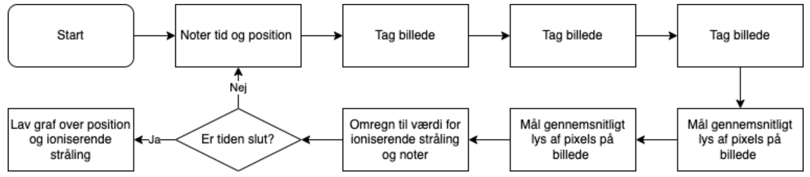

Astro Pi
At fortage eksperimenter i rummet er for mange videnskabsinteresserede mennesker en kæmpe drøm. Denne drøm har organisationen ISA gjort mulig, ved at placere 2 RaspberryPi microcomputere på ISS.
Disse computere er udstyret med diverse censorer, som kan controlleres gennem programmeringssproget Python og kan dermed bruges til at fortage forsøg. Dog er det, desværre, ikke alle der kan få
deres forsøg op på ISS. Først skal man igennem en konkurrence kaldet Mission Space Lab. Denne konkurrence valgte vi, en gruppe på 5 gymnasieelever, at tage op, og du kan følge vores proces herunder.
Kravene til Mission Space Lab
Ligesom, med næsten alle andre konkurrencer, er der nogen krav som man skal overholde for at deltage i Mission Space Lab.
Disse krav tog vi selvfølgelig højde for, og du kan se dem her.
Vores forsøg
I første face af Mission Space Lab skal man komme op med en ide til et interessant eksperiment man regner med at kunne udføre med Astro-Pi. Vi kom op med følgende ide, som fik os videre til face 2.
"The purpose of our experiment is to measure Earth’s magnetic field and determine if there is a difference between night and day. Our hypothesis is that when Earth is facing the sun, its magnetic field will be greatly altered by the solar winds. We will provide further evidence to our claim by also measuring ionizing radiation produced by the sun, since this has an influence on the magnetic field. Therefore, if there is a large amount of ionizing radiation, the magnetic field will also be under influence from the solar winds.
This information is extremely important since most people are unaware of the dangers in space and how much Earth really protects us from the sun, deadly gamma ray bursts and many others. By using the AstroPi we can therefore find out how these phenomena behave in space and compare them to the safe climate of earth."
Hvilke sensore vi valgte at bruge
For at udføre ens forsøg skal man selvfølgelig komme med en beskrivelse af de sensorer man planlægger at bruge til at udføre det. Vi valgte at bruge
magnetometeret samt
HQ-cameraet som du kan læse i vores beskrivelse her.
“We plan to gather data from the magnetometer IMU sensor to measure the Earth’s magnetic field and determine possible fluctuations, that are caused by the sun among others. Additionally, we think it could be interesting to put the cap on the camera to measure radioactive decay in space. By putting the cap on the camera, it will of course not be able to take pictures and video. However, it is our hypothesis that radioactive decay will happen as an effect of the Sun’s ionizing radiation, which will create radioactive decay. This decay will result in radiation which will hit the camera’s sensor cells and be detected as light. It would therefore be interesting to see if the camera can detect a difference in ionizing radiation when facing the Sun and not facing the Sun.”
Test af sensorer
En vigtig del af forberedelsen til at sende sit eksperiment op til ISS går på at teste om koden og sensorerne overhoved virker. For os var det især vigtigt at teste om vi med HQ-camararet kunne måle radioaktivt henfald, da vi var meget usikre på om det var muligt. Måden vi testede dette på var ved at sætte en radioaktiv kilde foran kameraet, og kører koden som funger på følgende måde.
Først sættes kameraer-cappen på sådan at der ikke trænger noget lys igennem til linsen. En kilde med gammastråling (som kan trænge igennem linsen) sættes derefter op foran kameraet. Koden startes som plotter lysintensiteten for de forskellige pixels. Til sidst kan vi ud fra plottet aflæse mængden af radioaktiv stråling som har ramt sensoren.
Vurdering af vores kode
Vores vurdering af projektkravene er, at vi bortset fra nogle mindre praktiske detaljer, som let rettes, opfylder kravene fint. Vi bruger alle tilladte libraries bortset fra "math" library, og desuden hedder vores kode ikke "main.py". Disse ting kan dog nem rettes og vil ikke have nogen indflydelse på selve eksperimentet. Det største vi mangler er at kode en timer ind i programmet, så det kun kører i det 3 afsatte timer man har at gøre godt med i rummet.
Flowchart

Links til kode + kodeforklaring
Magnetfelt Funktion
Kamara Funktion